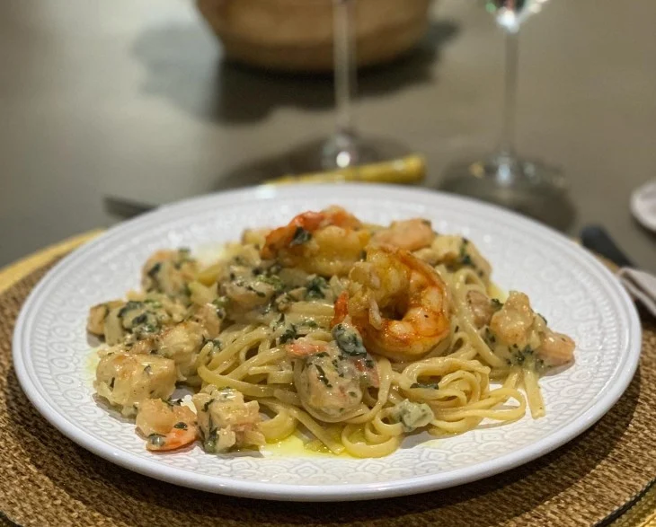

talharim de Lagosta e camarão (5 porções)

45 minutos
Voltar
Ingredientes:
- 500 gramas de talharim
- S1 kg de lagosta
- 500 gramas de camarões
- 500 ml de creme de leite
- 300 ml de vinho branco seco
- 200 gramas de parmesão
- 1 cebola picada
- 3 colheres de sopa de manteiga
- Sal, pimenta-do-reino e cheiro verde a gosto
Como fazer o Talharim de lagosta e camarão:
- Corte a lagosta e retire a carne.
- Leve para cozinhar com água e sal por 8 minutos.
- Transfira para uma tigela com água gelada.
- Em uma panela grande, coloque uma colher de manteiga e doure a cebola. Reserve.
- Na mesma panela, leve os camarões para dourar e tempere com sal e pimenta-do-reino. Reserve.
- Corte a lagosta em cubos e leve para dourar também. Separe.
- Cozinhe o macarrão conforme as instruções da embalagem. Ele deve ficar al dente.
- Volte a cebola e os frutos-do-mar para a panela.
- Adicione o vinho e deixe cozinhar em fogo baixo por 5 minutos.
- Coloque o creme de leite, o parmesão e acerte o sal.
- Ferva por 10 minutos até tudo incorporar. Em seguida, coloque o macarrão.
- Desligue o fogo e finalize com cheiro verde e o restante da manteiga.
- Agora é só servir. Bom apetite.